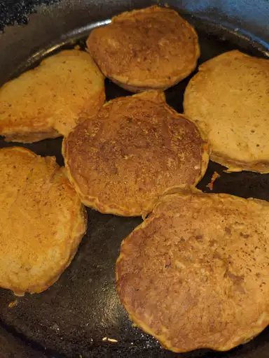

pumpkin pancakes

Description
Pumpkin pancakes are good in any season but are
perfect to warm you up on cold winter mornings.
You can use either canned or cooked fresh pumpkin
ingridients
- 1 cup pumpkin puree
- 1 ½ cup milk
- 2 tablespoons vegetable oil
- 2 tablespoons vinegar
- 2 cups all-purpose flour
- 3 tablespoons brown sugar
- 2 teaspoons baking powder
- 1 teaspoon baking soda
- 1 teaspoon ground allspice
- 1 teaspoon ground cinnamon
- ½ teaspoon ground ginger
- ½ teaspoon salt
- nonstick cooking spray
steps
-
Stir together milk, pumpkin, egg, oil,
and vinegar in a large bowl until well
combined.
-
Whisk together flour, brown sugar, baking powder,
baking soda, allspice, cinnamon, ginger,
and salt in a separate bowl. Add to pumpkin mixture;
whisk just until combined.
-
Pour 3 to 4 tablespoons batter for each pancake onto
the hot griddle and flatten batter slightly with a spoon. b
-
Cook until small bubbles appear, about 2 minutes.
-
Flip and cook until golden brown, about 2 more minutes.
Repeat with remaining batter.